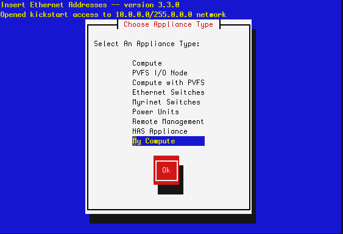

Base Users Guide: 
| ||
|---|---|---|
| Prev | Chapter 5. Customizing your Rocks Installation | Next |
This procedure describes how to add a new appliance type to your cluster. This is useful when you want a subset of compute nodes to have specific behavior that is different from the rest of the compute nodes. For example, if you want all the nodes in cabinet 1 to be configured differently from the rest of the compute nodes.
Before you begin, you'll want to be comfortable with the Rocks XML framework that is used to produce a configuration graph. Details on this framework are found in the Reference Guide.
First, you'll need to create a new node XML file. This file will contain the configuration scripts and/or packages that will be applied to each of your appliances. Let's call it my-compute.xml. This file should be created in the directory /export/rocks/install/site-profiles/5.5/nodes. Below is the contents of the file:
<?xml version="1.0" standalone="no"?> <kickstart> <description> My specialized compute node </description> <changelog> </changelog> <post> <file name="/etc/motd" mode="append"> My Compute Appliance </file> </post> </kickstart> |
Now, we'll link the above file into the existing XML configuration graph. We'll simply point the above XML node to the existing compute.xml node. In object-oriented terms, we are inheriting all the functionality of the compute appliance and then extending it.
To link my-compute.xml to compute.xml, in the directory /export/rocks/install/site-profiles/5.5/graphs/default, create the file my-appliance.xml and have it contain:
<?xml version="1.0" standalone="no"?>
<graph>
<description>
</description>
<changelog>
</changelog>
<edge from="my-compute">
<to>compute</to>
</edge>
<order gen="kgen" head="TAIL">
<tail>my-compute</tail>
</order>
</graph> |
To apply the changes above to the current distribution, execute:
# cd /export/rocks/install # rocks create distro |
Now we need to add an entry into the Rocks MySQL database. This is accomplished with the rocks command line:
# /opt/rocks/bin/rocks add appliance my-compute membership='My Compute' \ node='my-compute' |
Now let's retarget an existing compute node. We'll use insert-ethers to accomplish this task. First, ask insert-ethers to replace compute-0-0:
# insert-ethers --replace compute-0-0 |
This displays the screen:

Select My Compute then hit Ok. This removes compute-0-0 from the database and the next node that asks to be configured (that is, the next node that sends out a DHCP request) will be assigned the name my-compute-0-0. To see this in action, instruct compute-0-0 to reinstall itself:
# shoot-node compute-0-0 |
Eventually, you'll see insert-ethers report that it discovered my-compute-0-0. After the node installs, it will be configured as a my-appliance. You can login to the node by executing:
# ssh my-compute-0-0 |
Your custom appliance can be applied to any new node in your system by starting insert-ethers as instructed above, then by booting a new node in configuration mode (by forcing it to PXE boot or by booting the node with the Kernel/Boot Roll).